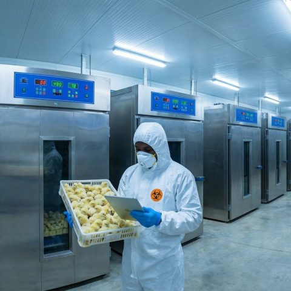
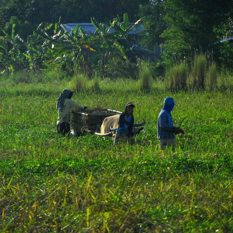

Empowering Farmers Across Africa
Practical knowledge, expert advice and a connected community. Build a stronger future for your farm.
Stronger agriculture starts with connection.

start on the farm.
Who we are
About Diary of a Farmer
Diary of a Farmer (DOAF) is a UK–Africa–based agribusiness and advisory initiative dedicated to strengthening African agricultural value chains and positioning farmers and agribusinesses for access to finance, global markets, and sustainable growth.
Guided by the principle Grow. Learn. Build Wealth, the initiative promotes productivity, knowledge-driven decision-making, and long-term economic value creation.
Get to know usOur approach
From farm potential to lasting value.
We connect practical farm-level execution with value chain development and sustainable agricultural finance.
- Improve productivity and farm practices
- Build structured, bankable enterprises
- Connect with finance and global markets
Our Focus Areas
Agricultural Consulting
Expert advice and services to enhance farm productivity and sustainability through practical, market-driven solutions.

Online Learning Hub
Courses designed for farmers to improve their skills and knowledge, with mentorship and access to sustainable farming equipment.

Poultry and Livestock Management
Training and resources for effective livestock management, focusing on poultry systems and sustainable practices.

NGO Partnerships
Collaborating with NGOs to boost agricultural development and design capacity-building programs for communities.
Our Products
Loading products...
Latest From The Blog
Loading latest posts...
Join Our Community
Become part of a growing network of farmers, cooperatives, agribusinesses, and investors working together to transform African agriculture. Access finance, global markets, and sustainable growth opportunities.
Join Now